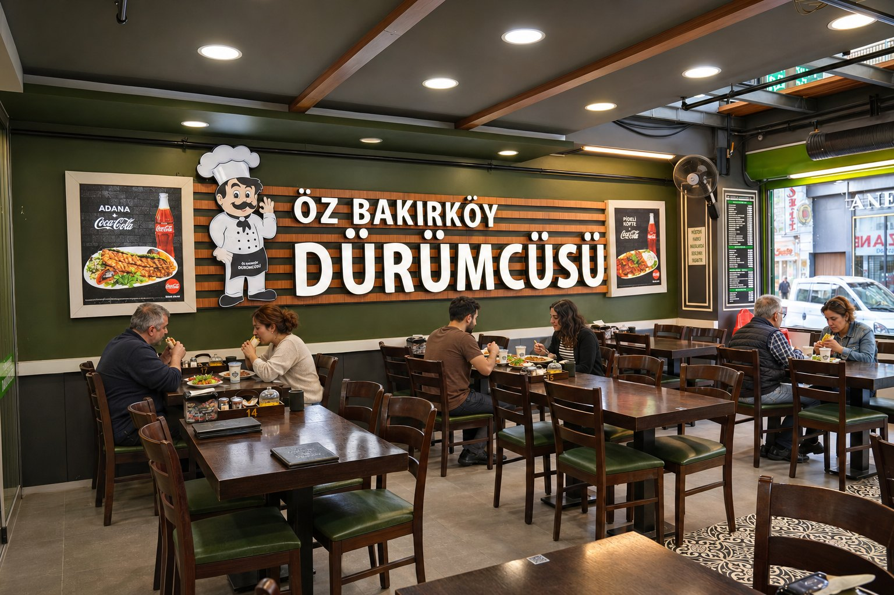
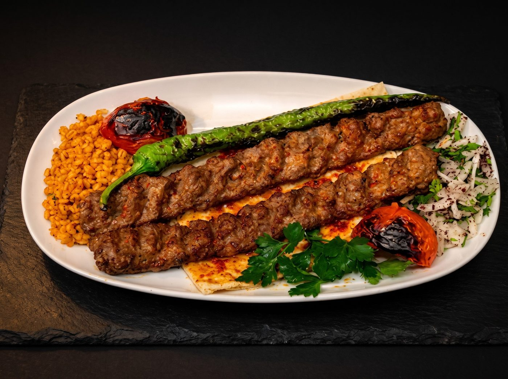
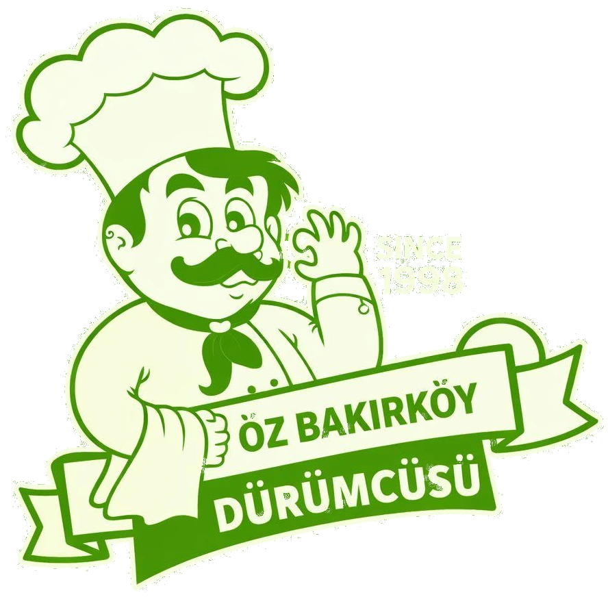

Zırhla
kıyılır, 
közde pişer.
Bakırköy'de 1998'den beri. Adana, Urfa ve dürümlerimizin eti ustanın elinde zırhla kıyılır, kömür ateşinde pişer.

Makine değil, zırh.
Adana'nın, Urfa'nın ve dürümlerimizin eti kıyma makinesinden geçmez. Usta, eti tahtada zırhla kıyar.
- 1
Zırhla kıyılır
Usta, eti tahtada iki saplı zırh bıçağıyla elde kıyar.
- 2
Şişe sarılır
Kıyma, ustanın elinde yassı şişe sarılır.
- 3
Kömürde pişer
Şişler ocak başında, kömür ateşinde pişer.

Hizmetler
Özel gün ve organizasyon
Düğün, nişan ve söz yemeklerinizi, iş ve sosyal toplantılarınızı salonumuzda ağırlıyoruz.
AyrıntıPaket servis
Hızlı servisle aynı lezzet evinize gelir.
0212 571 04 201998'den beri Bakırköy'de
Cevizlik Mahallesi'nde bir kebap ve dürüm salonu. Urfa'dan Adana'ya, beytiden pirzolaya kebabın her çeşidi kömür ateşinde pişer; kıyma bugün de zırhla elde çekilir.
- 1998Öz Bakırköy Dürümcüsü açıldı.
- 2018Yirminci yılı misafirlerimizle kutladık.
- 2026Bugün: 28 yıldır aynı usulle.
Ebuziya Caddesi, Bakırköy
Cevizlik Mahallesi'nde; Bakırköy Marmaray istasyonuna ve Cumhuriyet Meydanı'na yürüme mesafesinde.
- Adres
- Cevizlik Mah. Ebuziya Caddesi No: 47/C, Bakırköy / İstanbul
- Çalışma saati
- 12:00 ile 01:00 arası
- Telefon
- 0212 571 04 20
0212 570 81 30 - E-posta
- info
@ozbakirkoydurumcusu.com